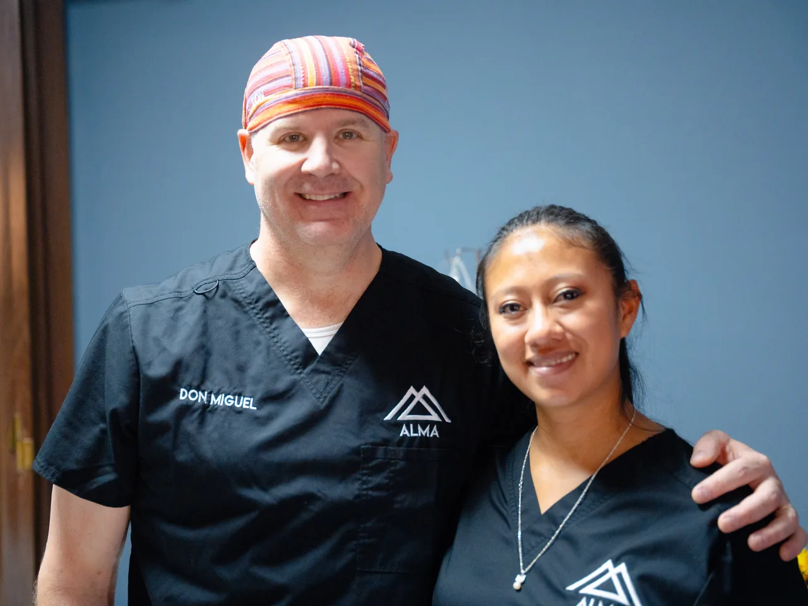
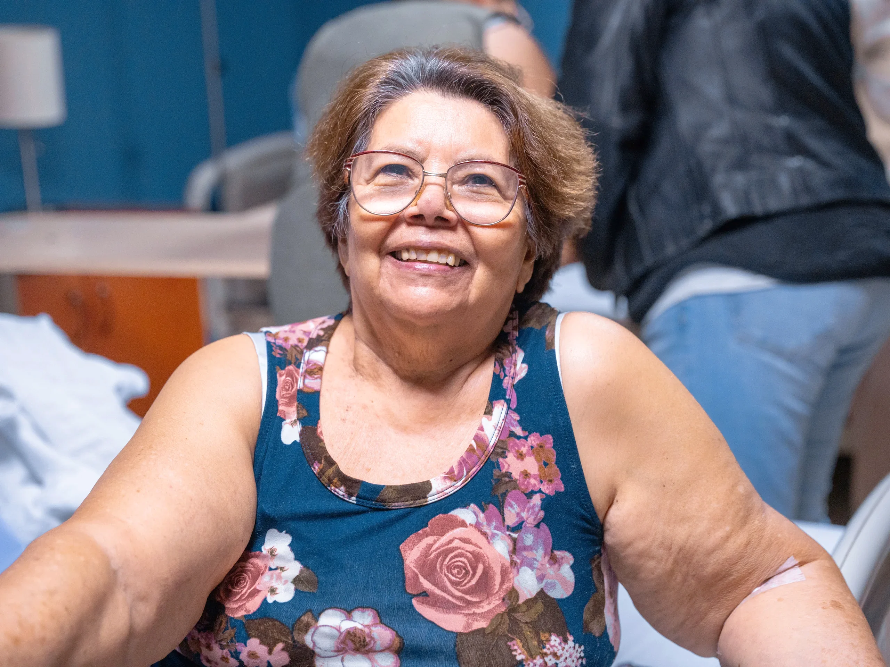
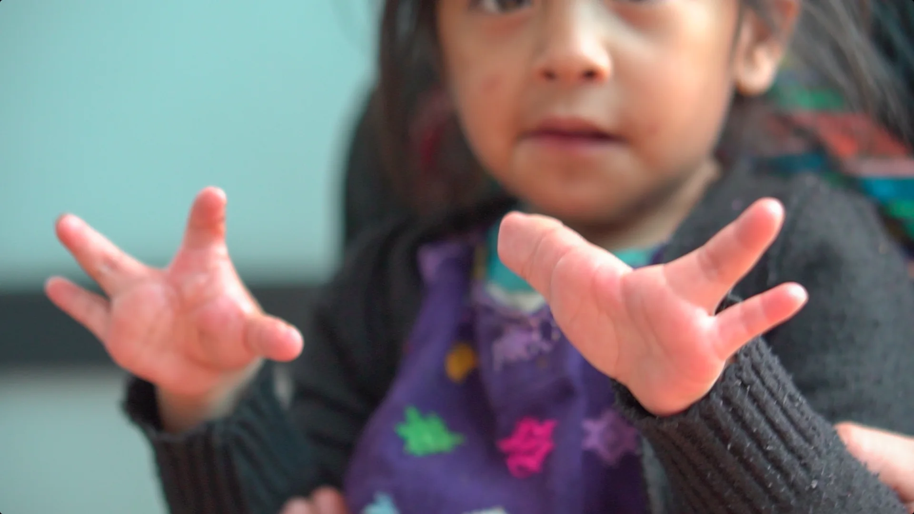

Misiones quirúrgicas
Equipos quirúrgicos de EE. UU. operan junto a cirujanos guatemaltecos, tres veces al año.
Ver las misionesA Love for Missions Abroad · Sirviendo a Guatemala
Desde 2018, ALMA lleva equipos quirúrgicos voluntarios a Guatemala para trabajar de la mano con médicos locales, atendiendo con seguridad a cientos de pacientes que no tenían a dónde acudir.
Llegamos con cirujanos, enfermeras y anestesia. Trabajamos junto a médicos guatemaltecos. Dejamos capacitación, insumos y amistades. Y cada paciente vuelve a casa con una vida un poco más plena.
Buscamos voluntarios · 2027
Estamos formando tres equipos quirúrgicos para 2027. Hay lugar para enfermeras, instrumentistas, anestesiólogos, cirujanos, intérpretes y voluntarios no médicos.

abr16–24 Abierta a voluntariosOtorrinolaringología y cirugía generalCentro Médico Renacer, Ciudad de Guatemala jun11–19 Abierta a voluntariosArtroscopia, gastroenterología / endoscopia y ginecologíaCentro Médico Renacer, Guatemala  oct8–16 Abierta a voluntariosReemplazo articularCentro Médico Renacer, Guatemala
oct8–16 Abierta a voluntariosReemplazo articularCentro Médico Renacer, Guatemala Por qué existe ALMA
En el altiplano de Guatemala, muchas clínicas no tienen el personal, los medicamentos ni el instrumental que necesitan. ALMA llena ese vacío con cirujanos, anestesiólogos y enfermeras voluntarios que sirven junto a profesionales guatemaltecos, y los sigue apoyando todo el año.
“Los pacientes quedan en listas de espera, pero la mitad de los centros de salud no tienen el personal, los medicamentos ni el instrumental que necesitan.”
Mike Oswald, CRNA, cofundador de ALMARevista Kootenai Health, 2022 (traducido)


Lo que hacemos
Equipos quirúrgicos de EE. UU. operan junto a cirujanos guatemaltecos, tres veces al año.
Ver las misiones
La cirugía de cataratas devuelve a los pacientes su independencia y su sustento.
Apoyar
Chequeos y atención dental para niños que de otro modo no la recibirían.
Apoyar
Apoyo al Hogar Virgen del Socorro, un hogar de rehabilitación física para niños.
Apoyar
Útiles y un área de juegos para la Escuela Vuelta Grande, y apoyo a una escuela de educación especial.
Apoyar
Capacitación continua que fortalece a médicos, enfermeras y personal guatemalteco.
ApoyarMira
Unos minutos dentro de una semana de misión: los quirófanos en Ciudad de Guatemala, los pacientes y sus familias, y el equipo guatemalteco y estadounidense que lo hace posible.
¿No se reproduce? Míralo en Google Drive.
Una semana de misión
 01
01 Viernes
 02
02 Sábado
 03
03 Domingo
 04
04 Lun – Mié
 05
05 Jue – Vie
 06
06 Sábado
Dona donde más se necesita
ALMA no tiene personal pagado en EE. UU. y sus gastos administrativos son mínimos, así que tu donación va casi por completo a la atención directa.
Mantiene a coordinadores locales, la logística y el seguimiento de pacientes durante todo el año.
Certificación en Soporte Vital Avanzado en Trauma para un profesional guatemalteco de nuestro equipo.
Para los niños de la Escuela Vuelta Grande.
Hogar Virgen del Socorro, un hogar de rehabilitación física para niños.
Totales de las campañas de ALMA en Givebutter al 22 de noviembre de 2026.



La historia de Evelinda
Evelinda nació con los dedos unidos en ambas manos. En su primer viaje con ALMA en 2021, el Dr. Patrick Mullen, cirujano de Kootenai Health, la operó con su mamá, Juana López, a su lado. Meses después la familia envió videos de su terapia de manos, y el Dr. Mullen espera volver para operar su otra mano.
Lee más historias →Síguenos
Noticias de las misiones, historias de pacientes y momentos detrás de cámaras, directo de nuestro Instagram y Facebook.


Sirve en un equipo quirúrgico, patrocina a un voluntario o dona para que un paciente más pueda caminar, ver o comer sin dolor.